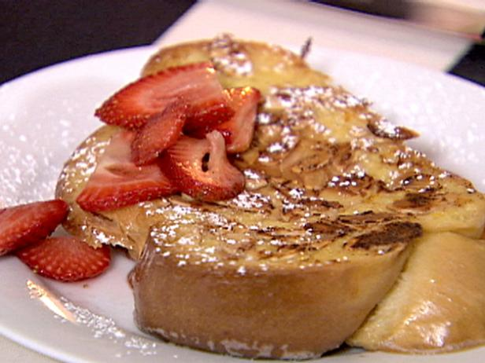
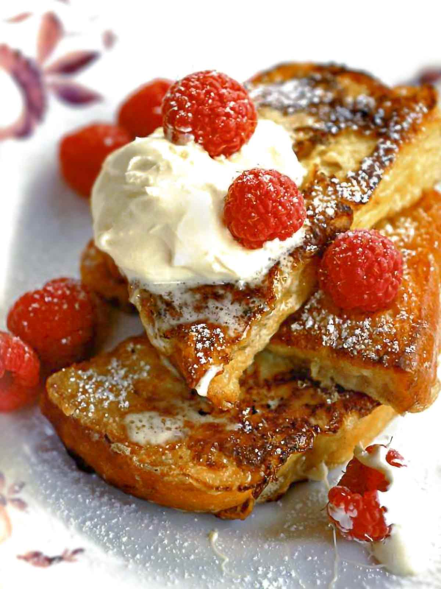

Yes, pain perdu is French toast, but a superior one. Unlike regular French toast, this batter cooks into a custardy, crispy coating that leaves the bread creamy and oh so good. The use of good egg bread is a must here. Homemade is best; however, store-bought (such as Hawaiian bread) will work in a pinch. A fresh squeeze of lemon juice and a good dusting of powdered sugar on each serving is traditional.

Ingredients
2 large eggs
2 tablespoons sugar
2 teaspoons pure vanilla extract
Pinch of salt
3/4 cup milk
Four 3/4-inch-thick slices of brioche or challah
1/2 cup (2 ounces) blanched whole almonds, coarsely chopped
2 tablespoons unsalted butter
Whipped cream, for serving (optional)

Instructions
In a medium bowl: rub the grated lime zest into the sugar. Stir in the lime juice and strawberries and let stand for 10 minutes, stirring occasionally.
In a shallow dish large enough to hold the brioche in a single layer: whisk together the eggs, sugar, vanilla and salt, then whisk in the milk. Add the brioche to the dish and turn to coat, then let the brioche soak for 10 minutes.
Place the almonds in a shallow bowl. Melt the butter in a large nonstick skillet. Dip 1 side of each slice of brioche into the almonds and add to the skillet, nut side down. Cook over moderate heat until the almonds are golden brown, about 3 minutes. Flip the brioche slices and cook until browned on the second side, about 3 minutes longer. Transfer the pain perdu to 4 plates, spoon the strawberries on top and serve. Pass the whipped cream at the table.